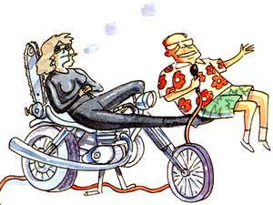

WELL, SIR, EVERY OCTOBER, THE fellers from Plumtree Crossin' pile onto Lafe Higgins' flatbed and head over to the National Storytelling Festival in Jonesborough, Tennessee. Why? Well, to hear the likes of Gamble Rogers, that showstealin', fasttalkin', Florida troubadour. A deep-voiced talker who can. rattle off tongue-tyin' litanies of elocution in so explosive a manner that he was once described as what happens when a dictionary hits a waterfall. Yep, them fellers wouldn't miss a chance to hear Gamble Rogers tell such tales as:
LATELY I HAVE BEEN GIVEN TO savor the glorious honor of having been proclaimed the Troubadour Emeritus of Ocklawaha County, Florida. All this by virtue of having performed for 20 consecutive years as the house act at the Terminal Tavern in Snipes Ford. Because of my position there of centrality, I'm able to see the Terminal Tavern in its true light, as a temple of culture, as a taproot to certain wellsprings of natural human behavior-precious wellsprings otherwise silted over with the benign compost of gentility and decorum.
The Terminal Tavern lies on Redbud Road between Snipes Ford and Bean Creek, Snipes Ford being our county seat and center of literacy-which is to say everybody in town knows what everyone else is doing but we still read the newspaper to find out who got caught at it. Beyond this, Ocklawaha County is principally known for its outsized number of rural alchemists. It's not what you're thinking. We have an inordinate num ber of folks who spend the bulk of their waking hours puzzling out novel ways to bleach their used coffee grounds so they can sell them for grits to the tourists on the interstate-which goes a long way toward explaining why so many Northerners don't care a hoot for Southern cooking.
The Terminal Tavern-a dirt parking lot, a hangarlike building, an acre and a half of pickup trucks. Chrome trailer hitches glittering in the starlight, some encapsulated with phosphorescent tennis balls. And a raffish clientele made up of grapefruit wine drinkers, trotline rustlers, pool hall hustlers, dirt road sports, garden variety scofflaws, genteel schizophrenics and good old girls.
I mean, they had some good old girls around the Terminal Tavern. For years, this place was the staging area for tri-state motorcycle raids carried out by an awesome, intrepid girls' motorcycle gang that called themselves Hell's Belles. They rode 50 cc dirt bikes and dressed in wet suits with Villager shirts over the top. One time an unwary functionary forcibly ejected one of these damsels from the Terminal Tavern. She went out and sullenly removed a McCulloch chain saw from a rifle scabbard on her machine, fired the saw up and cut the front porch off the establishment!
Those old girls flat do not care. They can roll a cigarette with one hand and roll you with the other. They put their earrings on with staple guns. Buddy, that's tough. Tougher than woodpecker lips.
So there I was, trying to make a living at the Terminal Tavern. And there was an old boy out there, and I could tell by the bizarre motley of his habiliments-that is, the shirt, which was of itself a polyester shantung metastasizing hibiscus disaster, the tartan plaid bermuda walking shorts and the white-on-white silk socks randomly configured with raspberry fleur-de-lis-by these and other salient significations, I could tell that he was no ordinary tourist, but a pilgrim, one of that gladsome band of chortlers who applaud anew each time the aircraft of caprice touches down upon the runway of novelty. And yet except for his colorful clothing and percolating extroversions, he probably wasn't so unlike the rest of us here.
Good people, I want you to know that I come from a place where sorriness is a prime virtue, a reason to be, a way of life. See the noble pilgrim, how he moves from station to station, ever ascendant, his brow knit with purblind avidity, until finally in one supreme spasmodic movement of palpitant glorification he grasps that brass ring of truth, clutches it Excaliburlike to his heaving bosom, and it can truly be said of him, "God, he's sorry."
Well, sorry is as sorry does. I'll tell you what sorriness is. Sorriness is Sheriff Otto Proudfoot hanging around Erindale's loading ramp saying, "I'll be 48 years old this month. I believe I'll get married in 1989; I'm tired of holding my stomach in."
Sorriness is Still Bill-Still Bill who moves so slow you have to line him up with a fence post to be sure he's in motion, who is so patently inert that the bearings on his selfwind wristwatch froze up-feeling his way into his brother-in-law's restaurant, saying "Who owns that Great Dane out there?" "Well, I do," said the stranger. "I tethered my beast out there a moment ago. Fine animal, been to obedience school, never hurt man, woman or -"
"He's dead."
"What do you mean he's dead?"
"My dog kilt him."
"Good God, man, what kind of an animal"
"Chihuahua."
"How could a Chihuahua possibly kill a Great Dane?"
"I believe he stuck in his throat."
These and other stories can be heard live on Gamble Rogers' record "Sorry Is As Sorry Does," available for $9.98 postpaid from Flying Fish Records, 1304 W. Schubert, Chicago, IL 60614 (312/528-5455).
|
 |
|
|